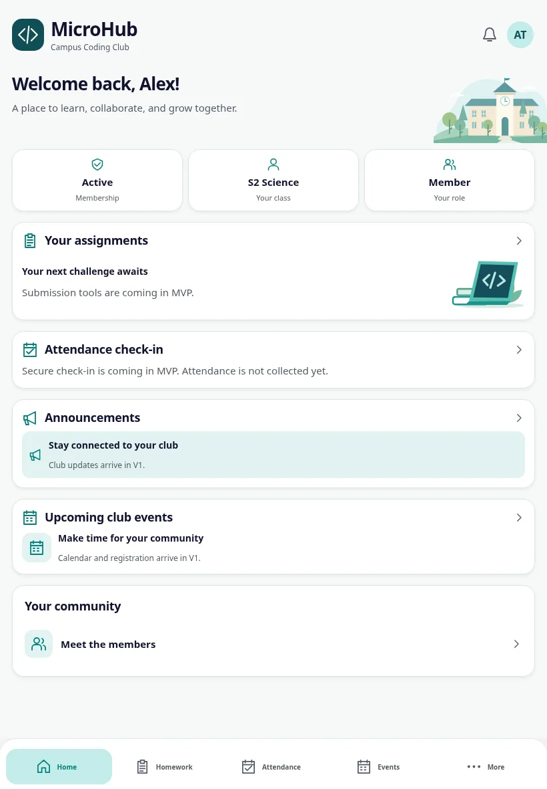

PROJECT NOTES
In developmentMicroHub
A Modern Campus workspace for a school coding community.
A closer look
Screenshot walkthrough: use the image below to explore the interface. A public interactive demo is not linked for this project.

What it does
- Membership onboarding, profiles, and a member directory.
- Role-aware membership review and administration.
- Consistent layouts for phones and tablets.
Built with
Project status
Homework, attendance, and event modules are planned. The screenshot is a UI preview, not a live school account.
LESSONS FROM THE IMPLEMENTATION
Engineering notes
Shared design tokens keep forms, cards, navigation, and feedback consistent across screens.
A useful dashboard should distinguish available workflows from planned modules.
Notes are based on the project source and documentation. Read the source